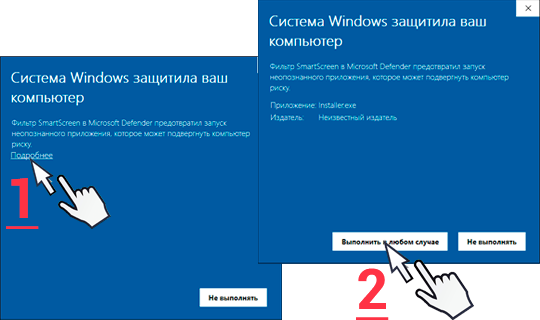
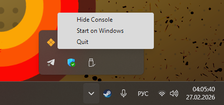
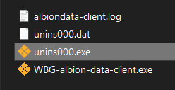

wbg-albiondata-client
Инструкция по установке
Установка клиента для Windows
- Загрузите со страницы с релизами последний установщик клиента для Windows: installer-WBG-tool.exe
-
Запустите скачанный файл установщика
- Выберите хотите ли устанавливать для всех пользователей устройства (верхний выбор) или только для себя (нижний выбор)
- Выберите язык инсталятора
- Согласитесь с принятием лицензии
- Выберите путь установки программы
- Выберите хотите ли создать ярлык на рабочем столе и включить автозапуск
- Нажмите кнопку Установить
-
Если у вас не был установлен
npcap, у вас появится
окно его установки
- Согласитесь с принятием лицензии npcap
- Ничего не трогайте и просто нажмите установить
- Установка займет некоторое время и в это время может появляться окно консоли — это нормально
- По окончанию нажмите кнопку продолжить и закончить установку
- Вернитесь обратно на окно установщика WBG-albiondata-client
- Дождитесь конца установки и нажмите кнопку окончания инсталяции
- Если перед закрытием инсталятора вы не убирали галочку на запуск, то программа должна сама по себе запуститься по окончанию установки
- Проведите дальнейшие настройки клиента через трей (информация как это сделать находится ниже)
Если вам вылезло предупреждение о безопасности: не переживайте, у нас просто не нашлось лишних 200$/год чтоб купить лицензию на подпись гарантии о безопасности.

Настройка клиента
Настройки, в частности закрытие консоли клиента, можно найти в системном трее Windows в правом нижнем углу экрана:

- Hide Console — Спрятать консоль
- Start on Windows — Запуск приложения при старте Windows (автозапуск)
- Quit — Выключить программу
Рекомендуется включить автозапуск, чтоб клиент не приходилось включать при каждом запуске игры
В случае, если ваше устройство крайне слабое и работа в фоне, даже такой маленькой программы, вам критична для производительности, стоит оставить автозапуск выключенным
Удаление клиента
-
Зайдите в папку в которую вы установили клиент
- Кликните ПКМ на ярлык клиента и после выберите "Открыть расположение файла" в открывшемся меню
-
В открывшемся проводнике нажмите на файл
unins000.exe

- В открывшемся окне нажмите на кнопку подтверждения удаления
- Дождитесь удаления клиента и после нажмите ОК
Installing the client on Windows
- Download the latest Windows installer installer-WBG-tool.exe from the releases page
-
Run the downloaded installer file
- Choose whether to install for all users (top) or only for yourself (bottom)
- Select the installer language
- Accept the license agreement
- Choose the installation path
- Choose whether to create a desktop shortcut and enable auto-start
- Click Install
-
If npcap was not
installed, an installation window will
appear
- Accept the npcap license agreement
- Don't change anything — just click install
- Installation will take a moment; a console window may appear — this is normal
- When done, click continue and finish installation
- Return to the WBG-albiondata-client installer window
- Wait for installation to finish and click the completion button
- If you didn't uncheck the launch option, the program will start automatically after installation
- Configure the client via the tray (instructions below)
If you see a security warning: don't worry — we simply don't have $200/year for a code signing certificate. Click "More info" → "Run anyway".
Client settings
Settings, including hiding the console, can be found in the Windows system tray in the bottom-right corner:
- Hide Console — Hide the console window
- Start on Windows — Launch on Windows startup (auto-start)
- Quit — Exit the program
Enabling auto-start is recommended so you don't need to launch the client every time you start the game
If your device is very low-powered and background processes are critical for performance, consider leaving auto-start disabled
Uninstalling the client
-
Go to the client installation folder
- Right-click the shortcut → "Open file location"
- In the explorer, click unins000.exe
- Confirm the uninstallation in the dialog
- Wait for removal to complete and click OK
Установка клиента для Linux
- Скачайте и распакуйте архив GNU-Linux.tar.gz со страницы с релизами.
-
Запустите в консоли
bash ./install.sh(или запустите bash-скрипт так, как вам удобно). -
У вас запросят
sudo-пароль — не пугайтесь, это необходимо для просмотра сетевых пакетов, на этом основан принцип работы программы. -
При наличии проблем попробуйте повторить шаги
2–3 и/или выполнить инструкции, которые укажет
установщик.
- Если установщик крашится или не выводит конкретных проблем — перейдите на шаг 7.
-
Если приложение не отображается на рабочем столе
— найдите его через поиск приложений.
- В Plasma KDE поиск открывается клавишей Meta (Super).
- Пользуйтесь с гордостью — вы делаете доброе дело.
Рекомендуем добавить программу в автозапуск, она
потребляет всего ~20 МБ ОЗУ.
- 7. Выход из безвыходных ситуаций
- Напишите в личные сообщения в Discord: pinok.tsukino
- Или свяжитесь там, где вы нашли этот установщик.
- Также можно просто задавать вопросы — отвечу.
Приятного пользования программой.
Комментарий от меня
К сожалению, я не могу создать репозитории в Pacman/DNF/dpkg/APT или AUR для всех на свете дистрибутивов Linux, так что сделал универсальный бинарник. Если хотите — можете предложить свою помощь в развитии проекта. Пока что настройки есть исключительно в Windows.
Installing the client on Linux
- Download and extract the GNU-Linux.tar.gz archive from the releases page.
-
Run
bash ./install.shin the terminal (or run the script however you prefer). -
You will be prompted for a
sudopassword — don't worry, it's required to monitor network packets, which is how the program works. -
If there are problems, try repeating steps 2–3
and/or follow the installer's instructions.
- If the installer crashes or shows no specific errors — go to step 7.
-
If the app doesn't appear on the desktop — find
it via application search.
- In Plasma KDE, search opens with the Meta (Super) key.
- Enjoy — you're doing a good thing.
We recommend adding the program to auto-start —
it only uses ~20 MB RAM.
- Write a private message on Discord: pinok.tsukino
- Or contact me where you found this installer.
- Feel free to ask questions — I'll respond.
Enjoy the program.
Comment from me
Unfortunately, I can't create repositories in Pacman/DNF/dpkg/APT or AUR for every Linux distribution, so I made a universal binary. If you want — you can offer your help developing the project. Settings are currently only available on Windows.
О проекте
Описание проекта
Суть работы
Albion Data Client мониторит локальный сетевой трафик вашего устройства, идентифицирует UDP-пакеты, содержащие данные игры Albion Online, и после отправляет информацию на центральный сервер брокера сообщений NATS для дальнейшего распределения по другим сервисам. Таким образом получается сбор данных, осуществляемый силами сообщества, для аналитики рынка, слежения за событиями и мониторинга игровой статистики.
Функции
-
отправка оповещений об атаке бандитов через бота
Hermes (для добавления его к себе на сервер свяжитесь с разработчиком) - Мониторинг сетевого трафика в реальном времени с помощью libpcap
- Фильтрование UDP-пакетов и их дальнейший анализ для поиска протоколов Albion Online
- Интеграция с системой брокера сообщений NATS
-
Поддержка кросс-платформы (Windows, Linux,
macOS) (macOS в процессе реализации) -
Интеграция в системный трей Windows
и macOS - Минимальное потребление ресурсов: максимум ~20 МБ ОЗУ[1] и 25 МБ дискового пространства
Карается ли баном?
Заявление от SBI Games (разработчика) касательно мониторинга сетевых пакетов:
«Our position is quite simple. As long as you just look and analyze we are ok with it. The moment you modify or manipulate something or somehow interfere with our services we will react.»
— MadDave, Technical Lead for Albion Online
Перевод: «Пока вы просто наблюдаете и анализируете — нас это устраивает. Как только вы что-то измените или вмешаетесь в работу наших сервисов — мы отреагируем.»
Пользователи должны следовать Условиям использования Albion Online и Правилам игры.
Сообщество и поддержка
Клиент создан в первую очередь для нужд гильдии WBG Guild . По вопросам:
Лицензия
Данный форк использует лицензию MIT License, как и оригинальный проект.
- При выходе обновлений Альбиона, изменения иногда могут сломать программу и она начнёт активно занимать оперативную память. Закройте программу и сообщите об этом разработчикам форка. ↩
About the project
How it works
Albion Data Client monitors local network traffic on your device, identifies UDP packets containing Albion Online game data, and sends the information to a central NATS message broker for distribution to other services. This creates community-driven data collection for market analytics, event tracking, and gameplay statistics.
Features
-
sending bandit attack notifications via a bot
Hermes (to add it to your server, contact the developer) - Real-time network traffic monitoring using libpcap
- UDP packet filtering and analysis for Albion Online protocols
- Integration with the NATS message broker
-
Cross-platform support (Windows, Linux,
macOS) (macOS in progress) -
Windows system tray integration
and macOS - Minimal resource usage: max ~20 MB RAM[1] and 25 MB disk space
Is it bannable?
Statement from SBI Games (the developer) regarding network packet monitoring:
«Our position is quite simple. As long as you just look and analyze we are ok with it. The moment you modify or manipulate something or somehow interfere with our services we will react.»
— MadDave, Technical Lead for Albion Online
Users must follow the Albion Online Terms of Service and Game Rules when using this program.
Community & support
This client was created primarily for the needs of the WBG Guild. For questions:
License
This fork uses the same MIT License as the original project.
- When Albion updates are released, changes can occasionally break the program, causing it to use excessive RAM. Close the program and notify the fork developers. ↩